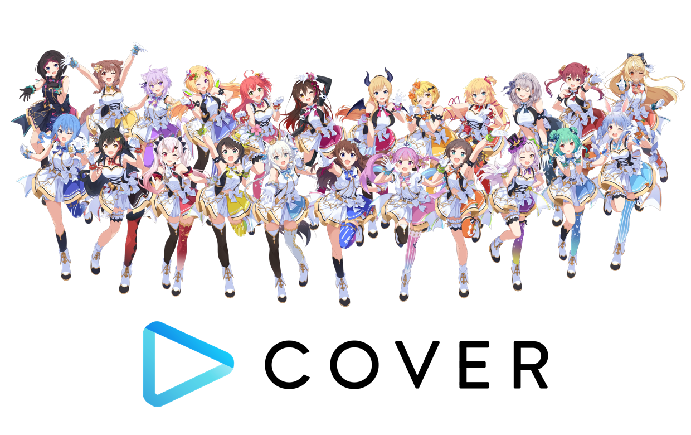

홀로라이브 프로덕션은 일본의 버추얼 유튜버 소속사이다. 커버 주식회사에서 운영한다. 2022년 기준으로,
소속사는 각 지역의 사무소가 50명 이상의 VTuber를 관리한다.
현재는 JP , EN , ID 국적에서 많은 버튜버들이
활둥중이며, 과거에는 중국에도 진출을 하였으나 현재는 철수한 상태이고, 한국또한 진출계획을 구상하였으나
당시의 한국시장은 Vtuber에 대한 수요가 적어 한국진출 계획은 파기되었다.
Vtuber들은 각종 PC게임 , 콘솔게임 등 뿐만 아니라 시청자들과 토크방송 , 음식 만들기 , 노래 등
다양한 분야에서 재능을 보여주기도 한다.
Hololive Ch.
Hololive English Ch.
Hololive Indonesia Ch.
Hololive JP
일본 멤버들. 공식적인 유닛 이름은 hololive이지만, 그렇게 되면 "버츄얼 유튜버 그룹 hololive" 안에 "유닛 hololive"가 존재하게 되어 hololive가 무엇을 가리키는지 헷갈리기 쉽기 때문에 일본 멤버들은 hololive EN/ID를 따라 hololive JP로 불리는 경우가 많다.
버츄얼 유튜버라는 문화가 일본에서 발전한만큼 hololive의 근간이 되는 멤버들이다. 모든 멤버들이 일본에서 거주한다는 이유 덕분에 해외 멤버들에 비해 다양한 콜라보레이션이나 음악 작업을 훨씬 수월하게 진행하고 있으며, 3D 모델링을 이용한 3D 라이브, 홀로노그라피티 등 양질의 컨텐츠를 꾸준히 제작할 수 있는 역량을 갖추고 있기 때문에 홀로라이브의 전체적인 방향을 이끌어가고 있다.
또한 현 서브컬쳐 문화의 근간이 되는 다양한 설정과 클리셰 등의 종주국에 가까운 일본을 바탕으로 한 멤버들이라, 후에 출범되는 해외 멤버들에 비해 JP 멤버들은 자신들의 기본적인 캐릭터 설정에 몰입하는 롤플레잉 성향이 강한 편. 즉 방송 자체가 만화나 소설 등에서 튀어나온 인물들이 방송을 하고 있는 느낌을 강하게 준다. 거기에 멤버들도 이러한 설정을 인지하면서 대화를 주고 받거나 관련 밈을 생산하는 부분도 커서, 각 캐릭터의 설정 부분을 알아두면 조금 더 즐겁게 방송을 시청할 수 있다.
위와 같은 이유로 EN이나 ID 멤버들은 일본 문화에 익숙한 멤버들이 많아 자연스럽게 일본어에 능숙한 멤버들이 많은 반면, JP 멤버들 중에서는 영어에 익숙한 멤버가 많지 않다. 영어-일어 이중언어 구사자로 영미권 팬과의 교류를 활발하게 추진하던 키류 코코의 졸업 이후로 콜라보레이션 방송에서 언어의 장벽 때문에 난항을 겪는 일도 있었다. 그나마 아카이 하아토 등 영어 사용자가 전무한 것은 아니고, 다른 멤버들도 떠듬떠듬이나마 영어로 대화를 주고받으려 노력은 한다. 중요한 합방의 경우 통역을 위해 친구A나 일본어 구사 해외 멤버가 참여하는 등의 방식을 취한다.
Hololive EN
2020년 9월에 데뷔하였다.
사신, 불사조, 옛 신의 사제, 아틀란티스의 후예 같이 신화 분위기를 팍팍 내는 라이버들이 있다. 그나마 왓슨은 인간 탐정이라 언뜻 보기엔 그나마 평범해보이지만, 사실 인외들이 판치는 홀로라이브를 조사하러 왔다는 설정에다가 시간 여행자라는 컨셉이기 때문에 이쪽도 평범한 라이버는 아니다.
일본어 실력은 키아라 > 이나 > 칼리 > 구라 ≥ 아메 순이다.
키아라는 회화도 독해도 거의 원어민 수준에 근접한 실력을 보여주며 이나는 키아라와 비교하면 부족해도 거의 막힘 없이 회화가 가능하지만 독해는 한자에서 막히는 모습을 보여준다. 칼리는 리스닝은 상당하지만 스피킹쪽에서 부족한 모습을 보여준다.
구라와 아메는 거의 비슷한 수준으로 대화의 부분부분을 캐치해내는 정도다.
의도한 건지는 모르겠으나 특이하게도 멤버 전원이 반전매력의 소유자이다. 쿨뷰티계 걸크러쉬 래퍼인 칼리는 의외로 여린 마음에 엄청난 그림 실력을 가지고 있고, Bottom left크싸레등 바보변태 이미지로 유명한 키아라는 3개국어를 현지인수준으로 구사하고 동시통역까지 하는 언어능력자다. 프로수준의 그림실력에 조용한 이미지의 이나는 사실 아재개그가 쉬지 않고 튀어나오고 폰게임 하드과금러에 오덕지식은 연륜이 느껴지는 수준. 마냥 귀여운 로리캐인줄 알았던 구라는 리듬게임 초고수에 노래실력도 최상급이고, 청순계 보이스에 금발벽안의 얌전한 이미지인 아메는 뛰어난 FPS실력, 광기와 분노, 섹드립패드립의 화신이자 EN 고유의 독특한 3D모델과 이벤트들을 처음으로 떠올리고 VRChat이라는 소재를 활용해 구현해낼 정도의 뛰어난 독창성과 실행력을 가지고 있다.
특이사항으로는 5명이 개별적으로도 매우 확실한 개성과 팬덤을 갖고 있으면서도 유닛으로서 동기들과의 공동활동, 콜라보에서 있어서 케미가 미친 수준으로 높다는 것. JP에서도 한 기수 전체가 한 유닛으로서 매우 공고한 일체감 및 협동심을 선보이는 기수들을 대개 3기와 5기 정도로 꼽는데, EN의 첫 기수인 이들도 유닛으로서의 모습이 JP 3기와 5기 못지 않거나 경우에 따라서는 오히려 상회한다. 심지어 판때기마저도 각자 마마들의 개성이 뚜렷하게 묻어나면서도 함께 모이면 서로의 색감과 디자인이 매우 잘 어우러지는 걸 볼 수 있다. ..더보기
Hololive ID
인도네시아어 뿐 아니라 영어와 일본어를 유창하게 구사하는 멤버들이 많아 방송 중에도 다양한 언어들을 자유자재로 넘나들면서 사용한다. 홀로라이브 ID 공식 유튜브 채널은 시청자들을 위해 인도네시이아어, 영어, 일본어 자막을 각각 달아 클립 동영상을 종종 업로드하고 있다.
국적이 제3세계인 인도네시아라서인지, 신상털이(doxxing) 문제로부터 상대적으로 자유로운 편이다. 안의 사람의 이전 경력이나 전생여부가 크게 화제가 되지는 않는 듯. 기껏해야 무나가 모델 또는 가수 경력이 있다느니, 트위치 IRL에서 놀던 미녀였다느니 하는 추측들만 도는 정도.
2021년 8월 17일 인도네시아 독립기념일을 맞이해서 전통민요를 현대적으로 편곡한 Virtual Medley Lagu Daerah를 공개했다. 총 다섯 곡의 민요가 포함되었는데, 순서대로 바탁어, 인도네시아어, 자바어, 아체어, 비악어로 각기 다른 언어로 쓰인 노래들이라 인도네시아 현지인들도 가사를 전부 알아듣지는 못한다고 한다. 여기 참여한 홀로ID 1~2기생들은 전부 새롭게 받은 신의상 복장으로 참여했으며, 특히 2기생들은 전날에 받은 신의상으로 참석했다. 저마다 인도네시아 전통의상의 요소들이 조금씩 반영되어 있는 차림이기 때문에 현지인들에게는 국뽕이 차오르기에 충분하다는 모양.
